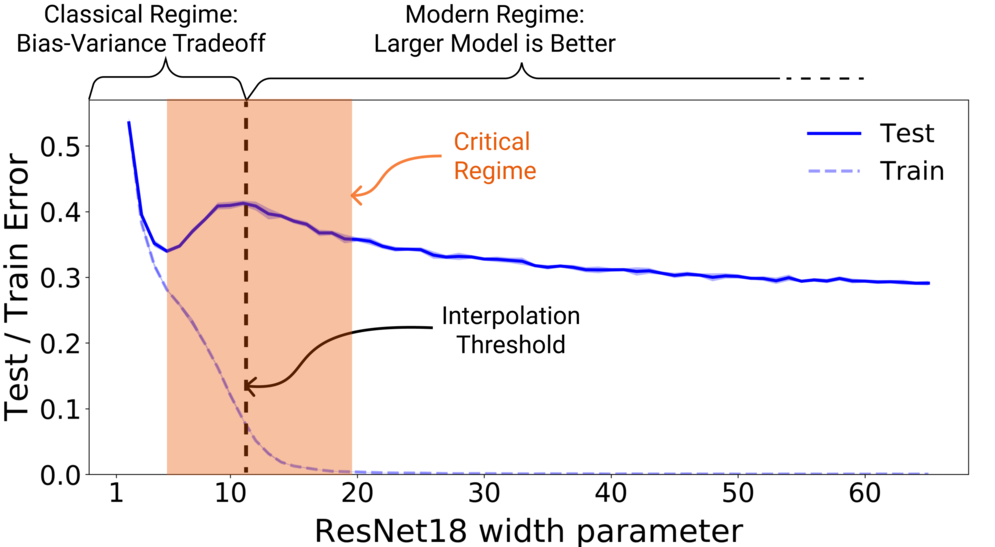
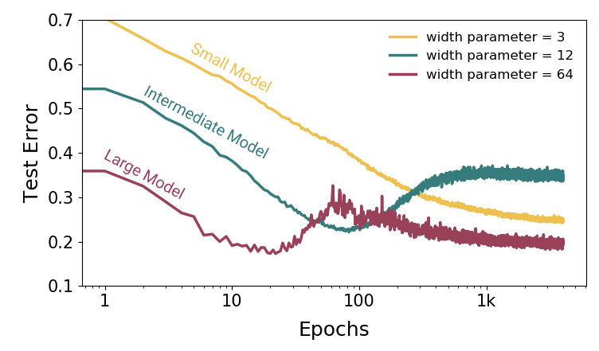
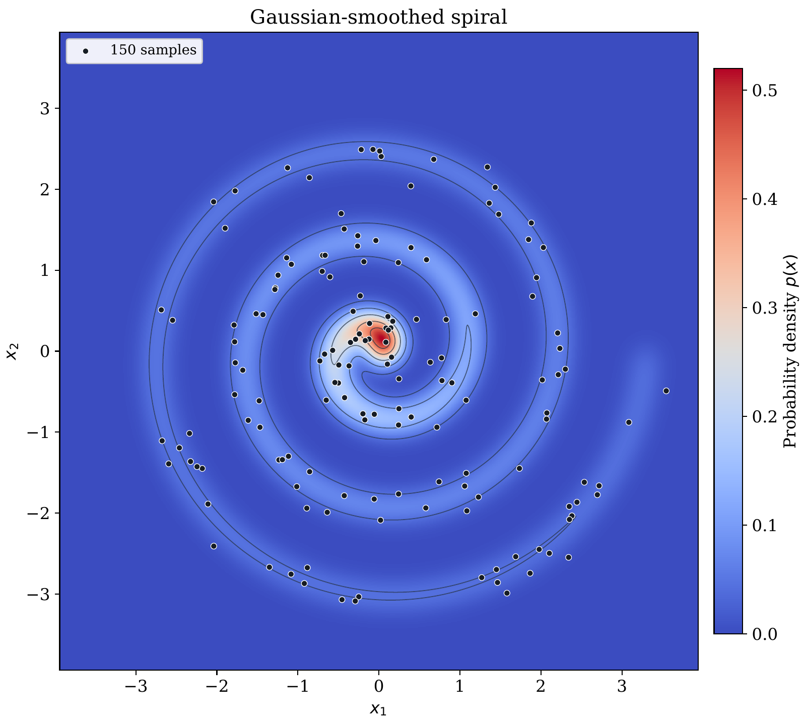
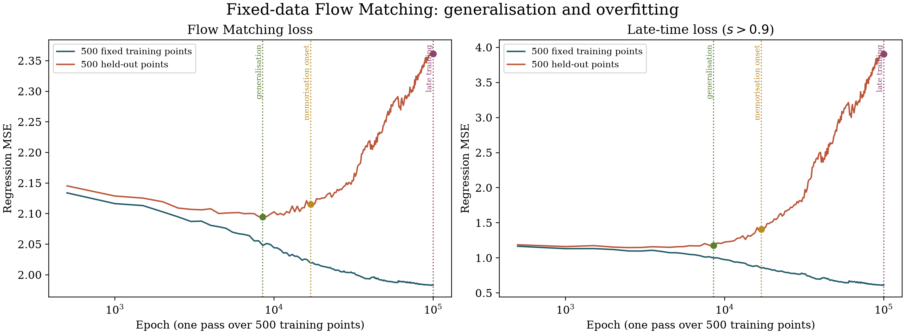

Mathematical Notes · Flow Matching generalization
When Generative Models Do Not Exhibit Double Descent: A Flow Matching Example
1 Introduction
Generative modelling is a field of machine learning that aims at approximating an unknown data distribution, with density \(p_{\mathrm{data}}\), from a finite set of independent samples \((x_1,\ldots,x_N)\in E^N\), where \(E=\mathbb{R}^d\). Methods include generative adversarial networks (GANs) [29] and variational autoencoders [30]. Diffusion models [20], [21] and Flow Matching [2] tackle modelling and sampling together by learning an evolution from a simple initial distribution to the data distribution. We are interested here in Flow Matching.
Let \(p_{\mathrm{init}}\) be the initial density, and let \(Z\sim p_{\mathrm{init}}\) and \(X\sim p_{\mathrm{data}}\) be independent. We consider the path of random variables \[\begin{equation} \label{eq:overfit-interpolation} X_t=tX+(1-t)Z,\qquad 0\leq t\leq 1. \end{equation}\] For \(0<t<1\), its density \(p_t\) is the convolution of the data and initial densities contracted by \(t\) and \(1-t\), respectively [28]: \[\begin{equation} \label{eq:overfit-convolution} p_t= \left[\frac{1}{t^d}p_{\mathrm{data}}\!\left(\frac{\cdot}{t}\right)\right] *\left[\frac{1}{(1-t)^d}p_{\mathrm{init}}\!\left(\frac{\cdot}{1-t}\right)\right]. \end{equation}\] Flow Matching consists in learning a velocity field \(v_\theta:[0,1]\times E\to E\) to transport \(p_{\mathrm{init}}\) to \(p_{\mathrm{data}}\). The target velocity \(v_t\) and the density path are linked by the continuity equation [2], [28]: \[\begin{equation} \label{eq:overfit-continuity} \partial_t p_t=-\mathop{\mathrm{div}}(p_t v_t). \end{equation}\] Sampling from the learnt distribution is then performed using a classical numerical integration solver, such as Euler or Runge–Kutta, applied to the learnt velocity vector field with initial samples drawn from \(p_{\mathrm{init}}\).
2 Double descent and memorisation
In supervised machine learning, it has been shown that, under some conditions, increasing model capacity can lead to a double-descent learning curve [31], [32]. The test error first decreases, increases near the interpolation threshold, where the model has enough capacity to fit the training samples, and decreases again for larger models. Nakkiran et al. [32] also observe double descent with longer training of a fixed ResNet18 on CIFAR-10 with label noise. Figure 2 illustrates both cases.


Recent research on diffusion models reports a different behaviour. Farghly et al. [25] derive, in their analysis, a U-shaped test loss as a function of model capacity. Urfin et al. [26] find that increasing capacity can drive unregularised models towards memorisation. Along the training-time axis, Bonnaire et al. [24] identify an initial generalisation regime followed by a memorisation regime when using finite training data.
For Flow Matching trained on a fixed dataset, sampling \(X\) from the available points makes the prescribed endpoint the empirical measure \[\begin{equation} \label{eq:overfit-empirical-measure} \widehat P_N=\frac{1}{N}\sum_{i=1}^N\delta_{x_i}. \end{equation}\] Learning this empirical distribution more precisely concentrates generated samples around individual training points [2], [27]. Carré du champ Flow Matching proposes a way to regularise this quality–generalisation tradeoff by introducing anisotropic noise adapted to the local data geometry [27]. We will visualise the transition from generalisation to memorisation on a small two-dimensional example.
3 A two-dimensional visualisation
We propose to visualise this memorisation regime through a two-dimensional example. We construct \(p_{\mathrm{data}}\) by smoothing the spiral \[\begin{equation} \label{eq:spiral-curve} \gamma(s)=hs\bigl(\cos s,\sin s\bigr),\qquad 0\leq s\leq 6\pi,\qquad h=\frac{1.1}{2\pi}, \end{equation}\] with a Gaussian kernel of standard deviation \(0.16\). The curve parameter is sampled uniformly. The resulting density is restricted to \([-3.94,3.94]^2\) and normalised. Figure 3 shows this density and a few samples.

3.1 Training from an infinite dataset
We first train an MLP with four hidden layers of width 128, SiLU activations and a sinusoidal time encoding. We use \(p_{\mathrm{init}}=\mathcal N(0,\operatorname{Id})\). At each of the 20,000 training updates, we draw 1,024 fresh samples from \(p_{\mathrm{data}}\), independent Gaussian samples from \(p_{\mathrm{init}}\), and times uniformly in \([0,1]\). Training therefore uses an on-demand stream of samples from the underlying distribution. The video in Figure 1 shows 975 initial Gaussian particles transported by the learnt field, using 50 fourth-order Runge–Kutta steps.
3.2 Training from a finite dataset
We now draw 1,000 independent samples from the same \(p_{\mathrm{data}}\): 500 are used for training and 500 for validation. These samples remain fixed for the full training. The finite-data model has four hidden layers of width 256, SiLU activations, the same time encoding, and 64 fixed spatial Fourier frequencies. Its architecture remains unchanged throughout this experiment.
We train the network for 100,000 epochs, where one epoch is a full pass over the 500 training samples, in two batches of 250. Gaussian samples and uniform times are drawn again at each visit.1 Figure 4 shows the training and validation velocity-regression losses. For evaluation, we use 32 fixed noise/time draws per data point at every checkpoint.

The transported initial law at different training regimes is shown in Figure 5: generalisation at epoch 8,500, the beginning of overfitting at epoch 17,000, and memorisation at epoch 100,000. The three videos follow the same 975 particles sampled from \(p_{\mathrm{init}}\). As training continues, their final positions concentrate around the fixed training points.
Generalisation Overfitting begins Memorisation
Generalisation
Overfitting begins
Memorisation
References
L. I. Nicolaescu, The co-area formula, lecture notes, revised 2021. https://www3.nd.edu/~lnicolae/Coarea.pdf.
Y. Lipman, R. T. Q. Chen, H. Ben-Hamu, M. Nickel, and M. Le, Flow Matching for Generative Modeling, ICLR, 2023. https://arxiv.org/abs/2210.02747.
M. S. Albergo, N. M. Boffi, and E. Vanden-Eijnden, Stochastic Interpolants: A Unifying Framework for Flows and Diffusions, Journal of Machine Learning Research 26 (2025), no. 209, 1–80. https://www.jmlr.org/papers/v26/23-1605.html.
F. Otto, The geometry of dissipative evolution equations: the porous medium equation, Communications in Partial Differential Equations, 26 (2001), no. 1–2, 101–174. DOI: 10.1081/PDE-100002243.
J.-D. Benamou and Y. Brenier, A Computational Fluid Mechanics Solution to the Monge–Kantorovich Mass Transfer Problem, Numerische Mathematik, vol. 84, no. 3, pp. 375–393, 2000. DOI: 10.1007/s002110050002.
C. Villani, Optimal Transport: Old and New, Grundlehren der mathematischen Wissenschaften, vol. 338, Springer, Berlin, Heidelberg, 2009. DOI: 10.1007/978-3-540-71050-9.
X. Liu, C. Gong, and Q. Liu, Flow Straight and Fast: Learning to Generate and Transfer Data with Rectified Flow, ICLR, 2023. https://arxiv.org/abs/2209.03003.
P. Esser et al., Scaling Rectified Flow Transformers for High-Resolution Image Synthesis, ICML, PMLR 235 (2024), 12606–12633. https://proceedings.mlr.press/v235/esser24a.html.
Y. Zhu, X. Liu, and Q. Liu, SlimFlow: Training Smaller One-Step Diffusion Models with Rectified Flow, ECCV, 2024. https://www.ecva.net/papers/eccv_2024/papers_ECCV/papers/10822.pdf.
O. Avrahami, O. Patashnik, O. Fried, E. Nemchinov, K. Aberman, D. Lischinski, and D. Cohen-Or, Stable Flow: Vital Layers for Training-Free Image Editing, CVPR, 2025, 7877–7888. https://openaccess.thecvf.com/content/CVPR2025/html/Avrahami_Stable_Flow_Vital_Layers_for_Training-Free_Image_Editing_CVPR_2025_paper.html.
M. Le et al., Voicebox: Text-Guided Multilingual Universal Speech Generation at Scale, NeurIPS 36 (2023). https://arxiv.org/abs/2306.15687.
A. Vyas et al., Audiobox: Unified Audio Generation with Natural Language Prompts, arXiv:2312.15821, 2023. https://arxiv.org/abs/2312.15821.
A. Polyak et al., Movie Gen: A Cast of Media Foundation Models, arXiv:2410.13720, 2024. https://arxiv.org/abs/2410.13720.
T. Ki, D. Min, and G. Chae, FLOAT: Generative Motion Latent Flow Matching for Audio-driven Talking Portrait, ICCV, 2025, 14699–14710. https://openaccess.thecvf.com/content/ICCV2025/html/Ki_FLOAT_Generative_Motion_Latent_Flow_Matching_for_Audio-driven_Talking_Portrait_ICCV_2025_paper.html.
V. I. Bogachev, Measure Theory, Vols. I–II, Springer, 2007. DOI: 10.1007/978-3-540-34514-5.
L. Ambrosio, N. Gigli, and G. Savaré, Gradient Flows: In Metric Spaces and in the Space of Probability Measures, 2nd ed., Lectures in Mathematics ETH Zürich, Birkhäuser, Basel, 2008. DOI: 10.1007/978-3-7643-8722-8.
L. Ambrosio and N. Gigli, A user’s guide to optimal transport, in Modelling and Optimisation of Flows on Networks, Lecture Notes in Mathematics 2062, Springer, 2013, 1–155. https://cvgmt.sns.it/media/doc/paper/195/users_guide-final.pdf.
S. Mallat, Modèles probabilistes par énergie de Gibbs et GAN, lecture in Génération de données en IA par transport et débruitage (2), Collège de France, 2024–2025. https://www.college-de-france.fr/fr/agenda/cours/generation-de-donnees-en-ia-par-transport-et-debruitage/modeles-probabilistes-par-energie-de-gibbs-et-gan.
N. Metropolis, A. W. Rosenbluth, M. N. Rosenbluth, A. H. Teller, and E. Teller, Equation of State Calculations by Fast Computing Machines, The Journal of Chemical Physics 21 (1953), no. 6, 1087–1092. DOI: 10.1063/1.1699114.
J. Ho, A. Jain, and P. Abbeel, Denoising Diffusion Probabilistic Models, NeurIPS 33 (2020), 6840–6851. https://proceedings.neurips.cc/paper/2020/hash/4c5bcfec8584af0d967f1ab10179ca4b-Abstract.html.
Y. Song, J. Sohl-Dickstein, D. P. Kingma, A. Kumar, S. Ermon, and B. Poole, Score-Based Generative Modeling through Stochastic Differential Equations, ICLR, 2021. https://arxiv.org/abs/2011.13456.
A. Tong, K. Fatras, N. Malkin, G. Huguet, Y. Zhang, J. Rector-Brooks, G. Wolf, and Y. Bengio, Improving and generalizing flow-based generative models with minibatch optimal transport, Transactions on Machine Learning Research, 2024. https://arxiv.org/abs/2302.00482.
P. Guilbert, Fisher–Rao and Wasserstein–Otto Geometries of Parametric Probability Families: A Comparative Atlas, preprint, Zenodo, 2026. DOI: 10.5281/zenodo.22921933.
T. Bonnaire, R. Urfin, G. Biroli, and M. Mézard, Why Diffusion Models Don’t Memorize: The Role of Implicit Dynamical Regularization in Training, Advances in Neural Information Processing Systems 38 (2025). https://papers.nips.cc/paper_files/paper/2025/hash/ceb7f3cc876a6dcb15130a645b5a4507-Abstract-Conference.html.
T. Farghly, B. Dupuis, A. Durmus, and U. Simsekli, Benign Overfitting Does Not Occur in Diffusion Models, arXiv:2607.02671, 2026. https://arxiv.org/abs/2607.02671.
R. Urfin, T. Bonnaire, G. Biroli, and M. Mézard, Double Descent and Malign Overfitting in Diffusion Models, arXiv:2609.26392, 2026. https://arxiv.org/abs/2609.26392.
J. Bamberger, I. Jones, D. Duncan, M. Bronstein, P. Vandergheynst, and A. Gosztolai, Carré du champ flow matching: better quality-generalisation tradeoff in generative models, ICLR, 2026. https://proceedings.iclr.cc/paper_files/paper/2026/hash/dbc9f9d486bd1714896111b0fcd78cd1-Abstract-Conference.html.
P. Guilbert, Flow Matching and Optimal Transport: An Illustrated Introduction to Wasserstein–Otto Geometry, Zenodo, 2026. DOI: 10.5281/zenodo.24084198.
I. J. Goodfellow, J. Pouget-Abadie, M. Mirza, B. Xu, D. Warde-Farley, S. Ozair, A. Courville, and Y. Bengio, Generative Adversarial Nets, Advances in Neural Information Processing Systems 27 (2014). https://proceedings.neurips.cc/paper/2014/hash/f033ed80deb0234979a61f95710dbe25-Abstract.html.
D. P. Kingma and M. Welling, Auto-Encoding Variational Bayes, ICLR, 2014. https://arxiv.org/abs/1312.6114.
M. Belkin, D. Hsu, S. Ma, and S. Mandal, Reconciling modern machine learning practice and the bias-variance trade-off, Proceedings of the National Academy of Sciences, 2019. DOI: 10.1073/pnas.1903070116.
P. Nakkiran, G. Kaplun, Y. Bansal, T. Yang, B. Barak, and I. Sutskever, Deep Double Descent: Where Bigger Models and More Data Hurt, ICLR, 2020. https://arxiv.org/abs/1912.02292.
After epoch 30,000, updates use the exact empirical conditional-mean velocity to reduce gradient noise. This has the same Flow Matching optimum; the plotted losses keep the original conditional regression definition.↩︎